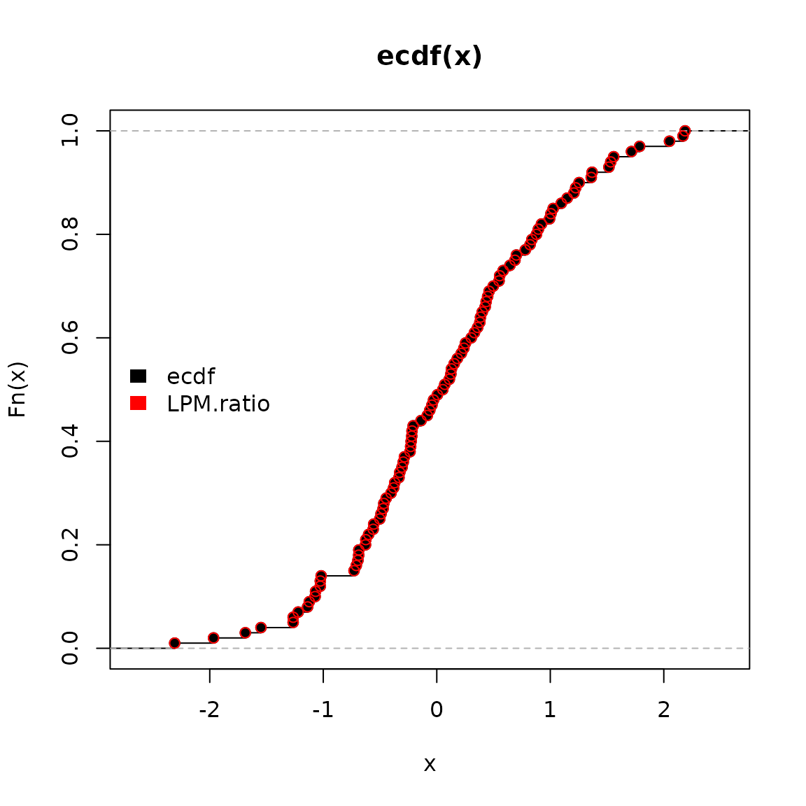
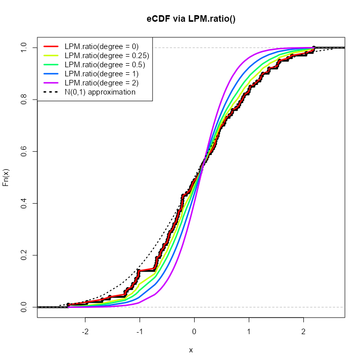
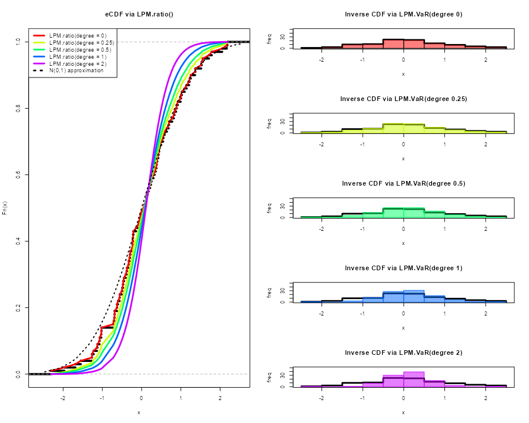
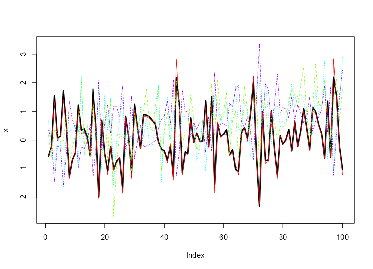
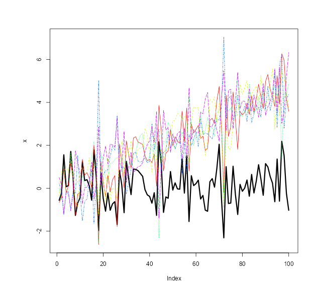

05. Getting Started with NNS: Sampling and Simulation
Fred Viole
Source:vignettes/NNSvignette_05_Sampling.Rmd
NNSvignette_05_Sampling.RmdNNS offers several novel sampling methods from any
distribution, as well as simulating variables while maintaining their
dependence.
Sampling
CDFs
Cumulative distribution functions (CDFs) represent the probability a variable will take a value less than or equal to .
Empirical CDF
The empirical CDF is a simple construct, provided in the base package
of R. We can generate an empirical CDF with the ecdf
function and create a function (P) to return the CDF of a
given value of
.
## Empirical CDF
## Call: ecdf(x)
## x[1:100] = -2.3092, -1.9666, -1.6867, ..., 2.169, 2.1873
P = ecdf(x)
P(0); P(1)## [1] 0.48## [1] 0.83Lower Partial Moment CDF
(LPM.ratio)
The empirical CDF and Lower Partial Moment CDF
(LPM.ratio) are identical when the degree
term of the LPM.ratio is set to zero.
Degree 0 LPM:
LPM.ratio is equivalent to the following form for any
target
and variable
:
Using the same targets from our ecdf example above (0,1)
we can compare LPM.ratios.
## [1] 0.48## [1] 0.83Calculating the probability for every target value in
,
we can plot both methods visualizing their identical results.
ecdf function in black and
LPM.ratio in red.

LPM.ratio degree > 0
Increasing degree changes the target from event
frequency to a directional severity share. In the univariate case with
the required finite moment and nondegeneracy, this defines an induced
CDF whose law generally differs from the original empirical law. It is
not a smoothing operation that automatically preserves original
probabilities.

Generating PDFs with (LPM.VaR)
The corresponding LPM.VaR inverts the
selected directional curve. Degree zero uses R type-7 empirical
quantiles; degree one gives expectiles. Drawing uniforms and applying a
positive-degree inverse samples the induced law, not the original
marginal law.
The general form in the following plots is:
LPM.VaR(percentile = seq(0, 1, length.out = 100), degree = 0, x = x)
Any length percentile can be used to sample from the
underlying distribution
.

Viewing the first 10 samples from each of the degrees
compared to our original
.
degree.0.samples = LPM.VaR(percentile = seq(0, 1, length.out = 100), degree = 0, x = x)
degree.0.25.samples = LPM.VaR(percentile = seq(0, 1, length.out = 100), degree = 0.25, x = x)
degree.0.5.samples = LPM.VaR(percentile = seq(0, 1, length.out = 100), degree = 0.5, x = x)
degree.1.samples = LPM.VaR(percentile = seq(0, 1, length.out = 100), degree = 1, x = x)
degree.2.samples = LPM.VaR(percentile = seq(0, 1, length.out = 100), degree = 2, x = x)
head(data.frame(check.names = FALSE, cbind("original x" = sort(x), degree.0.samples,
degree.0.25.samples,
degree.0.5.samples,
degree.1.samples,
degree.2.samples)), 10)
#> original x degree.0.samples degree.0.25.samples degree.0.5.samples degree.1.samples
#> 0.000000% -2.309169 -2.309169 -2.309169 -2.3091689 -2.3091689
#> 1.010101% -1.966617 -1.966617 -1.941187 -1.6935534 -1.4744855
#> 2.020202% -1.686693 -1.686693 -1.599486 -1.4541184 -1.2160087
#> 3.030303% -1.548753 -1.548753 -1.382558 -1.2462537 -1.0823025
#> 4.040404% -1.265396 -1.265396 -1.250804 -1.1454066 -0.9968077
#> 5.050505% -1.265061 -1.265061 -1.176437 -1.0745549 -0.9290647
#> 6.060606% -1.220718 -1.220718 -1.119649 -1.0252637 -0.8666875
#> 7.070707% -1.138137 -1.138137 -1.067817 -0.9868700 -0.8090628
#> 8.080808% -1.123109 -1.123109 -1.026420 -0.9322146 -0.7556675
#> 9.090909% -1.071791 -1.071791 -1.014290 -0.8710985 -0.7070109
#> degree.2.samples
#> 0.000000% -2.3091689
#> 1.010101% -1.1614823
#> 2.020202% -0.9710028
#> 3.030303% -0.8610022
#> 4.040404% -0.7810056
#> 5.050505% -0.7169391
#> 6.060606% -0.6632142
#> 7.070707% -0.6170757
#> 8.080808% -0.5765594
#> 9.090909% -0.5403627Simulation
Bootstrapping (NNS.meboot)
NNS.meboot is based on the maximum
entropy bootstrap, available in the R-package meboot. Its
rank-based scenario construction is useful for time-series exploration.
The default force.clt constrains replicate means using an
iid standard-error scale, so preserving rank structure does not by
itself provide calibrated sampling uncertainty for serial
dependence.
Specified rank-correlation targets explore a chosen range of scenario shapes. They do not enumerate every possible future path. A zero rank-correlation target does not imply independence, and achieved marginal distributions and moments must be checked for the chosen settings.
We will generate 1 replicate of
for each value of a sequence of
values (the
),
and then plot the results compared to our original
(black line). NNS.MC is a streamlined
wrapper function for this functionality of
NNS.meboot.
set.seed(123)
boots = NNS.MC(x, reps = 1, lower_rho = -1, upper_rho = 1, by = .5)$replicates
reps = do.call(cbind, boots)
matplot(reps, type = "l", col = rainbow(length(boots)))
lines(x, type = "l", lwd = 3, ylim = c(min(reps), max(reps)))
Checking our replicate correlations:
sapply(boots, function(r) cor(r, x, method = "spearman"))
#> rho = 1 rho = 0.5 rho = 0 rho = -0.5 rho = -1
#> 0.99840384 0.50357036 0.01478548 -0.46829883 -0.97912991More replicates and ensembles thereof can be generated for any number of values.
Note — where the target lives. The dependence alignment is applied to each replicate individually and in residual space: each replicate’s residuals are mixed between the aligned and anti-aligned orderings of the original residuals so that their dependence matches the requested (book Chapter 20). For a series without trend, as here, that is also the dependence on the series itself, which the per-replicate correlations above confirm. For a trending series the replicates keep the trend, so their correlation with the original series can stay high even at : on
AirPassengers, replicates have a mean Spearman correlation of about 0.8 with the series. Two things to keep in mind when checking a result: (1) measure it in the same metric thattypetargets — atype = "NNSdep"target withNNS.dep(...)$Dependence(unsigned), a"spearman"/"pearson"target with rank/linear correlation; a signed correlation taken on an unsigned"NNSdep"target is not comparable to and can even read negative while the dependence target is met. (2) Theensembleis the per-observation mean of the replicates — a central summary, not a single series carrying the target dependence — so a rank or linear correlation taken directly on theensembletends to read higher than the per-replicate (averaging amplifies the shared order). Calibrate on thereplicates, not theensemble.
target_drift Specification
We can also specify a target drift in our replicates with the
target_drift parameter.
boots = NNS.MC(x, reps = 1, lower_rho = -1, upper_rho = 1, by = .5, target_drift = 0.05)$replicates
reps = do.call(cbind, boots)
plot(x, type = "l", lwd = 3, ylim = c(min(c(x, reps)), max(c(x, reps))))
matplot(reps, type = "l", col = rainbow(length(boots)), add = TRUE)
Please see the full NNS.meboot and
NNS.MC argument documentation.
Simulating a Multivariate Dependence Structure
A marginal rank transformation can transfer the empirical rank arrangement of continuous observations to chosen new marginal distributions. It does not identify a unique copula when marginals have atoms, and a positive-degree partial-moment transform generally changes the original marginal probability law.
Use degree-zero probabilities for this frequency construction. For
these continuous samples, subtracting half an observation from the
empirical CDF ranks keeps probability levels away from zero and one.
Inverting with degree-zero LPM.VaR applies the target
empirical quantile function (type7 interpolation).
set.seed(123)
x <- rnorm(1000); y <- rnorm(1000); z <- rnorm(1000)
original.data <- cbind(x, y, z, x_copy = x)
n <- nrow(original.data)
dep.structure <- apply(original.data, 2, function(v) {
LPM.ratio(degree = 0, target = v, variable = v) - .5 / n
})
new.data <- replicate(ncol(original.data), rnorm(2000, mean = 10, sd = 20))
new.dep.data <- vapply(seq_len(ncol(original.data)), function(j) {
LPM.VaR(percentile = dep.structure[, j], degree = 0, x = new.data[, j])
}, numeric(n))
cor(original.data, method = "spearman")
cor(new.dep.data, method = "spearman")The output has one row per original rank tuple, here 1000, even though the new marginal reference samples have 2000 rows. It approximates those reference marginals at the supplied ranks. For tied marginals, specify a tie policy or randomized probability transform within each CDF jump; ordinary inclusive CDF values are not uniform at atoms. Positive-degree transformations remain useful for directional severity modelling, with their changed target stated explicitly.
Alternative Using NNS.meboot
Alternatively, if we wish to keep the simulated values close to the
original data, we can apply the NNS.meboot
procedure to each of the variables.
We generate 100 replicates per column at and compare the column ensembles with the original data.
# Apply bootstrap to each variable
new.boot.dep.data = apply(original.data, 2, function(r) NNS.meboot(r, reps = 100, rho = .95))
# Reformat into vectors
boot.ensemble.vectors = lapply(new.boot.dep.data, function(z) unlist(z["ensemble",]))
# Create matrix from vectors
new.boot.dep.matrix = do.call(cbind, boot.ensemble.vectors)Checking ensemble correlations with
original.data:
for(i in 1:4) print(cor(new.boot.dep.matrix[,i], original.data[,i], method = "spearman"))
#> [1] 0.9885851
#> [1] 0.9965075
#> [1] 0.9906302
#> [1] 0.9901535Reading these numbers. Here
ensembleis the per-observation mean of the replicates, a central summary. Its correlation with the input is not the requested per-replicate target. Alignment is applied to individual residual paths; averaging and trend reconstruction can change the measured correlation. Treat the ensemble as a representative path and inspect achieved correlations for the requested output.
Compare Multivariate Dependence Structures
Column-wise scenario generation does not guarantee preservation of the full joint law or every multivariate dependence statistic. Compare the achieved structure explicitly.
NNS.copula(original.data)
NNS.copula(new.boot.dep.matrix)
#> [1] 0.4452914
#> [1] 0.4423774
head(original.data)
head(new.boot.dep.matrix)
#> x y z x_copy
#> [1,] -0.56047565 -0.99579872 -0.5116037 -0.56047565
#> [2,] -0.23017749 -1.03995504 0.2369379 -0.23017749
#> [3,] 1.55870831 -0.01798024 -0.5415892 1.55870831
#> [4,] 0.07050839 -0.13217513 1.2192276 0.07050839
#> [5,] 0.12928774 -2.54934277 0.1741359 0.12928774
#> [6,] 1.71506499 1.04057346 -0.6152683 1.71506499
#> x y z x_copy
#> ensemble1 -0.50534918 -0.99114837 -0.5599005 -0.53374834
#> ensemble2 -0.25336404 -1.10495674 0.1277390 -0.20297478
#> ensemble3 1.62035927 0.07462431 -0.5952796 1.61734635
#> ensemble4 -0.02471890 0.01657279 1.2773063 0.05897732
#> ensemble5 0.05586323 -1.48844305 0.1384859 0.12920777
#> ensemble6 1.80768833 0.82770106 -0.6056424 1.83212766References
If the user is so motivated, detailed arguments and proofs are provided within the following: